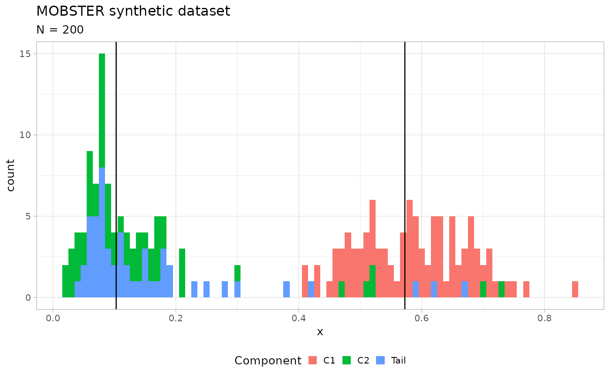
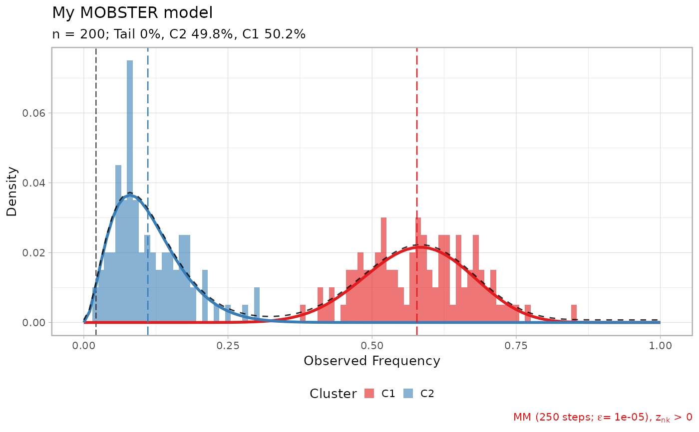

This function fits the mixure of Beta distributions with a power-law Pareto
Type-I tail (optional). The function performs model selection for different mixtures, which
the user specify with the input parmeters. The function return a list of all fits computed
(objects of class dbpmm), the best fit, a table with the results of the fits and a
variable that specify which score has been used for model selection. The fitting of each model
also runs the function choose_clusters which implements a simple heuristic to filter
out small clusters from the fit output.
Note: You can also use the "auto setup" functionality that, with one keyword, loads preset parameter values in order to implement different analysis.
Usage
mobster_fit(
x,
K = 1:3,
samples = 5,
init = "peaks",
tail = c(TRUE, FALSE),
epsilon = 1e-10,
maxIter = 250,
fit.type = "MM",
seed = 12345,
model.selection = "reICL",
trace = FALSE,
parallel = TRUE,
pi_cutoff = 0.02,
N_cutoff = 10,
auto_setup = NULL,
silent = FALSE,
description = "My MOBSTER model"
)Arguments
- x
Input tibble (or data.frame) which is required to have a VAF column which reports the frequency of the mutant allele (this should be computed adjusting the raw VAF for tumour purity and copy number status). See also package
mmobsterwhich contains functions to prepare common inputs for this computation.- K
A vector with the number of Beta components to use. All values of
Kmust be positive and strictly greater than 0; they are combined with the value oftailto define all model configurations tested for model selection- samples
Number of fits that should be attempted for each configuration of the model tested.
- init
Initial values for the paremeters of the model. With
"ranodm"the mean and variance of each Beta component are randomply sampled in the interval (0,1). With"peaks"a peak detection heuristic is used to place the Beta means to match the peaks; in that case the variance is still randomised. In both cases the power-law shape is randomised.- tail
If
FALSEthe fit will not use a tail, ifTRUEit will.- epsilon
Tolerance for convergency estimation. For MLE fit this is compared to the differential of the negative log-likelihood (NLL); for MM fit the largest differential among the mixing proportions (pi) is used.
- maxIter
Maximum number of steps for a fit. If convergency is not achieved before these steps, the fit is interrupted.
- fit.type
A string that determines the type of fit.
"MLE"is for the Maximum Likelihood Estimate of the Beta paraneters,"MM"is for the Momemnt Matching; MLE is numerical, and thus slower. In both cases the estimator of the tail shape - if required - is its MLE and its analytical.- seed
Seed for the random numbers generator
- model.selection
Score to minimize to select the best model; this has to be one of
'reICL','ICL','BIC','AIC'or'NLL'. We advise to use only reICL and ICL- trace
If
TRUE, a trace of the model fit is returned that can be used to animate the model run.- parallel
Optional parameter to run the fits in parallel (default), or not.
- pi_cutoff
Parameter passed to function
choose_clusters, which determines the minimum mixing proportion of a cluster to be returned as output.- N_cutoff
Parameter passed to function
choose_clusters, which determines the minimum number of mutations assigned to a cluster to be returned as output.- auto_setup
Overrides all the parameters with an predined set of values, in order to implement different analyses. Availables keys: `FAST`, uses 1) max 2 clones (1 subclone), 2) random initial conditions 3) 2 samples per parameter set 4) mild `epsilon` and `maxIter`, sequential run. For reference, the default set of parameters represent a more exhaustive analysis.
- description
A textual description of this dataset.
Value
A list of all fits computed (objects of class dbpmm), the best fit, a table with the results of the fits and a
variable that specify which score has been used for model selection.
Examples
# Generate a random dataset
x = random_dataset(seed = 123, Beta_variance_scaling = 100, N = 200)
print(x) # Contains a ggplot object
#> $data
#> # A tibble: 200 × 2
#> VAF simulated_cluster
#> <dbl> <chr>
#> 1 0.615 C1
#> 2 0.572 C1
#> 3 0.846 C1
#> 4 0.679 C1
#> 5 0.502 C1
#> 6 0.582 C1
#> 7 0.530 C1
#> 8 0.691 C1
#> 9 0.654 C1
#> 10 0.601 C1
#> # ℹ 190 more rows
#>
#> $model
#> $model$a
#> C1 C2
#> 15.001213 3.758771
#>
#> $model$b
#> C1 C2
#> 11.19567 32.76085
#>
#> $model$shape
#> [1] 1
#>
#> $model$scale
#> [1] 0.05
#>
#> $model$pi
#> Tail C1 C2
#> 0.2678075 0.4525544 0.2796381
#>
#>
#> $plot

#>
# Fit, default models, changed epsilon for convergence
x = mobster_fit(x$data, epsilon = 1e-5)
#> [ MOBSTER fit ]
#>
#> ✔ Loaded input data, n = 200.
#> ❯ n = 200. Mixture with k = 1,2,3 Beta(s). Pareto tail: TRUE and FALSE. Output
#> clusters with π > 0.02 and n > 10.
#> ❯ Custom fit by Moments-matching in up to 250 steps, with ε = 1e-05 and peaks
#> initialisation.
#> ❯ Scoring (with parallel) 5 x 3 x 2 = 30 models by reICL.
#>
#> [easypar] 2025-11-21 08:50:52.855299 - Overriding parallel execution setup [TRUE] with global option : FALSE
#>
#>
#> ℹ MOBSTER fits completed in 50.3s.
#>
#> ── [ MOBSTER ] My MOBSTER model n = 200 with k = 2 Beta(s) without tail ────────
#> ● Clusters: π = 52% [C1] and 48% [C2], with π > 0.
#> ✖ No tail fit.
#>
#> ● Beta C1 [n = 102, 52%] with mean = 0.58.
#> ● Beta C2 [n = 98, 48%] with mean = 0.11.
#> ℹ Score(s): NLL = -108.12; ICL = -182.58 (-182.58), H = 1.88 (1.88). Fit
#> converged by MM in 67 steps.
plot(x$best)
print(x$best)
#> ── [ MOBSTER ] My MOBSTER model n = 200 with k = 2 Beta(s) without tail ────────
#> ● Clusters: π = 52% [C1] and 48% [C2], with π > 0.
#> ✖ No tail fit.
#>
#> ● Beta C1 [n = 102, 52%] with mean = 0.58.
#> ● Beta C2 [n = 98, 48%] with mean = 0.11.
#> ℹ Score(s): NLL = -108.12; ICL = -182.58 (-182.58), H = 1.88 (1.88). Fit
#> converged by MM in 67 steps.
lapply(x$runs[1:3], plot)
#> $`2`
 #>
#> $`5`
#>
#> $`6`
#>
#> $`5`
#>
#> $`6`

#>